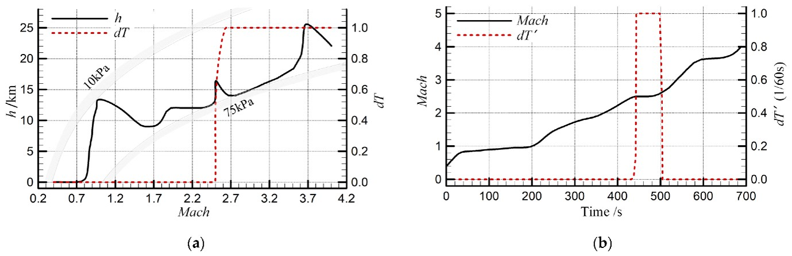
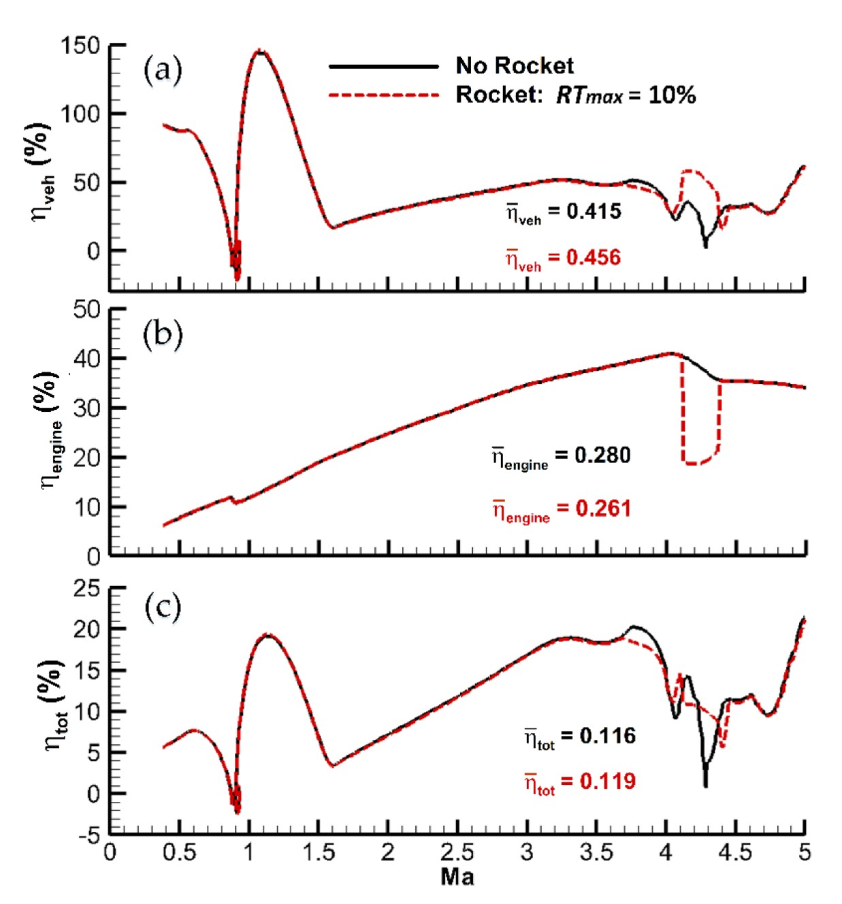
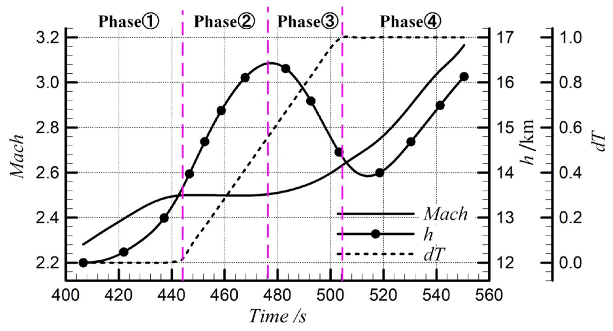

Turbine-based combined cycle (TBCC) propulsion integrates a gas turbine and ramjet or scramjet WHAT IS THIS propulsion cycle into a singular system. The aim is a single system that can provide a “wide speed range, high performance, and reusability” (Guo et al., 2023). TBCC is identified as a “state-of-the-art of propulsion system performance” (Thomas and Walker, 2009), that should be highly valued in development programs due to offering improved specific impulse over rocket-based systems in sub-sonic take-off and return, offering more safety, capability for aircraft-like operations, in addition quick turn arounds, extended lifetime of >1000 flight missions, and two-stage-to-orbit vehicles. (Thomas and Walker, 2009). Guo et al. (2023) adds that hypersonic and combined-cycle technologies carry national defence and economic value. Of the 6 enabling technologies identified within the NAI study (Thomas and Walker, 2009), the most critical is mode transition from low speed to the high-speed propulsion systems. This essay aims to explain mode transition, examine the central problem, the ‘thrust trap’, and evaluate the solutions proposed.
What Mode Transition Is, and How It Works: Mode transition is the handover process from the turbine to the ramjet. The handover involves switching the inlet and nozzle flow paths, controlling expansion/compression profiles and fuel flow to the alternate propulsion system (Guo et al., 2023). Guo et al. (2023) model this with a transition marker, dT, that moves from 0 to 1 (turbine and ramjet mode respectively). In their simulated engine, dT stays at 0 until Mach 2.5, and at Mach 2.63, dT = 1. The gas turbine is limited to Mach 2.5, so the additional thrust to reach Mach 2.63 is from the ramjet system. During this time, the centre cone rapidly contracts at its maximum rate to meet the ramjet’s needs, raising the flow capture coefficient to almost 100% (Guo et al., 2023), acting as the changing geometry for the handover process.

Figure 1. (a) Flight trajectory and mode transition marker dT ; (b) Rate of change of the mode transition markers dT and flight time variation with Mach number. (Guo et al., 2023) He, Zhang and Sun (2023) reference the opening of movable splitters by the entrances of the turbojet and ramjet channels, rather than a variable geometry inlet cone, using variable values of 1 and 0 (fully open and fully closed), over defined Mach ranges, so that airflow is progressively swapped. Their model reaches the same conclusion as Guo et al.’s; that there is a ‘thrust trap’. NASA’s work reflects the practical working difficulty. Their scaled model revealed issues with unstart constraints [violet breakdown of supersonic airflow inside an engine duct / intake], distortion / bleed constraints, turbine transients [short periods of undue stress leading to accelerated mechanical failure] all occurring during mode transition (Thomas and Walker, 2009).
The Problem: The Thrust Trap The transition point between the propulsion cycles sits at the upper operational limit of the turbine jet, and at the lower operational limit of the ramjet. Therefore, thrust and drag become unbalanced, so the aircraft continues decelerating and cannot provide the necessary start conditions for the ramjet. This is the thrust trap (He, Zhang and Sun, 2023). This is quantified by Guo et al. (2023). In their simulation, minimum thrust values fell to 23% of the pre-transition value. Additionally, specific impulse [ratio of change in momentum to the mass of fuel used] fell drastically during transition from ≈ 1500 to 675. This is attributed to four combined areas: 1. A ‘climb-dive’ strategy. 2. Turbine engine shutdown. 3. Low thrust per unit flow rate of the ramjet engine. 4. Thrust loss of the sub-critical ramjet engine.
Solutions under Investigation: Using a small rocket to propel through thrust gap region Guo et al. (2020) introduced a rocket as an auxiliary power source during the established transition period. Through trajectory optimisation of the Gauss pseudospectral (mathematic approximation method of a trajectory, saving significant computing power.) they concluded a rocket booster is “not only a practical solution”, but also “an economical scheme when the TBCC meets the requirements of thrust”, as seen in the efficiency (ηveh) increase of the overall vehicle, seen in Figure 2 (a).

Figure 2 (a) Vehicle efficiency profiles; (b) Engine efficiency profiles; (c) Total efficiency profiles. (Guo et al., 2020)
(2) Increase capabilities of the turbine engine
NASA modified a Williams WJ38 turbine engine to extend its maximum operating speed from Mach 0.9 to Mach 3.1 and completed sea-level static testing across dynamic pressures of 570 to 1500 psf (Thomas and Walker., 2009). The engine was intended for integrated testing in NASA Glenn’s supersonic wind tunnel (Foster et al., 2012).() Zhang et al., (2017) simulated a Mach 4 over-under TBCC engine, comparing net thrust and fuel consumption, selected Mach 3 for mode transition. This aligns with the modified turbine’s capability, showing promise, though both findings are not from flight-representative testing.

Figure 3, Mach number and height characteristics during mode transition. (Guo et al., 2023)
| Contents |
|---|
| Abstract |
| Introduction |
| Analysis and Discussion |
| References |
Thomas, S. and Walker, J. (2009). Overview of the TBCC Discipline. [online] NASA. Available at: https://ntrs.nasa.gov/api/citations/20110012002/downloads/20110012002.pdf [Accessed 19 Oct. 2026].
Calculating word count...